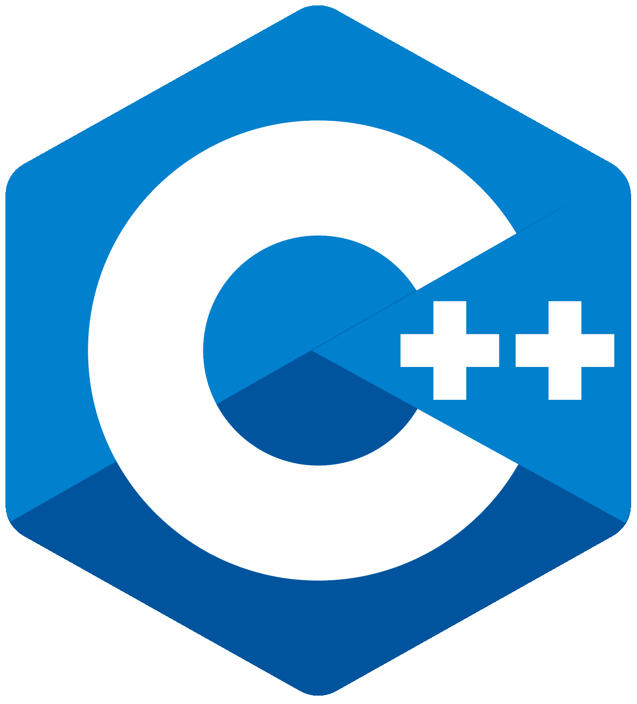
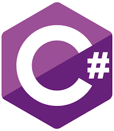

Matthew Moses
A veteran animator and recent grad from the NSCC IT Program (programming concentration). I have a broad range of skills in both animation and programming.
My goal is to combine my programming and artistic skills, to build great full stack applications.
Skills

I've built a wide range full stack, rich web applications using JavaScript, JQuery, Node.JS, Angular and have experience using React.
I have also built web applications that make use of external API’s such as Google, and Yahoo’s services. I'm knowledgable of setting up
Ajax requests, as well as serializing/deserializing both XML and JSON data for use in web applications.
For exaple, I've built a full stack web application that uses a PHP server built using CodeIgniter which interfaces with a JQuery frontend.
The application makes use of the Github jobs API to function as a job searching tool.
{kind=link}
{kind=link}
{kind=link}
{kind=link}
{kind=link}
{kind=link}
I am extremely knowledgable of Java. My experience with the languge covers a number of the popular frameworks, such as Java Enterprise, SpringBoot
and JHipster. I've primarily developed web based applications in Java. In Java Enterprise I developed an online invoicing system that integrated with a custom
SQL database I developed. It also made use of a Tomcat REST server I also setup. I've also developed projects using JHipster on Linux. The purpose of the project
was to build an online health tracking system, which I deployed to Heroku. This system made use of a PostgreSQL database, however in the development phase
I made use of a MySQL database. I've also programmed a number of projects for Android, which made use of the SQLite database system. These projects ranged from
an online movie rating system, to a study aid quiz app which handled the quiz answers and questions with a hash function.
I have designed and built a number of databases using OracleSQL, MySQL, and SQLite, and PostgreSQL.
I am also knowledgeable of data migration and SQL Select statements. In the past I have developed databases which handle invoicing systems,
and I have programmed databases to handle blogging and comment systems. I have also worked as a database developer on several teams
my primary responsibility was to setup the database using MySQL, as well as code the backend server. The projects involved a great deal of communication with the frontend programmers.
As the project was developed I changed the database to suit our requirements. Upon each build I also uploaded a copy of the database creation script to our GitHub repository.
{kind=link}
{kind=link}
I’ve build a number of projects using PHP, which are able to integrate with different languages.
For example I have built PHP Rest servers which interact with a SQL database and handle JSON requests from a JavaScript frontend.
I also have experience working with both Laravel and Codeigniter. Using Laravel I was able to build a blogging system which handled
user login and registration, as well as administrative functionality. I build custom web routes to handle different users based on their account credentials.
{kind=link}
{kind=link}
{kind=link}

I am knowledgeable of building applications in C++, and have experience building various data structures such as binary search trees, linked lists, sorting algorithms, and hash tables.
I’ve used a custom built linked list combined with a hash table to create a spell checker. I’ve also built an iterative maze solving algorithm which employs a dead end fill technique
as well as a backtracking method that employs stack to keep track of the maze path information.
{kind=link}
{kind=link}
{kind=link}
I have worked with Python for a number of years, and have built multiple applications in Python.
I am also applying my knowledge of 3D graphics to begin building custom plugins for Blender, which is an open source 3D graphics and animation program that uses Python as its scripting language.

I have extensive knowledge of programming in C# primarily in Windows, and for the Unity game engine.
I have built projects that make use of multi-threading, such as an asynchronous chat program that makes use of dependency injection, and custom libraries.
I have also built applications which connect to external web API’s and custom built databases.
Experience
Web Developer
Responsible for maintaining the website for the AFX film festival. Responsibilities include updating the website with new events, building new pages, and uploading new content to the site.
Senior Animator
Responsibilities include laying out key animation, and doing animation on several shows, including Space Ranger Roger, Inspector Gadget, and Bob the Builder.
The majority of work is done using Audodesk Maya 2013 and Maya 2016
Toon Boom Animator
Responsible for animating for the production; Pickle and Peanut. This production was classically animated using Toon Boom Harmony. My work on this production helped in winning the studio a Nova Scotia Screen award.
Flash Animator
Responsibilities included Flash animation on the production; Lalaloopsy. On this production I was required to animate scenes assembled in Adobe Flash based on the storyboards provided.
3D artist
My responsibilities on this project included communicating directly with the client in order to produce a logo and per-visualizations for a Meccano commercial spot. For this project I worked from toy designs and build Meccano pieces in 3D which I then assembled into completed models which were then rendered out. This project was done primarily using Autodesk Maya, Photoshop, and Adobe After Effects.
Compositer
On this production I was required to apply visual effects to animated scenes for the production; Grojband. I worked primarily with Adobe Flash and Adobe After Effects. I would render out the individual layers from the Flash scenes then composit them together in After Effects. This production required building custom visual effects depending on the requirements of the episode. Once the compositing was completed I would then render out the final scene from After Effects.
Compositer
For this production I was responsible for compositing together an animated Leica of an animated feature. I worked primarily in Adobe Flash and Adobe After Effects. I would render out the separate layers from the Flash file, then composite them together in After Effects. I would also apply shading, visual effects as well as colour touch ups depending on the scenes. I would then render out the final completed scenes from After Effects.
After Effects Animator
My responsibilities on this production included animation on the production; Airship Dracula. The majority of animation was done within Adobe After effects. The project also involved heavy use of the 3D functionality in After Effects.
Education
Nova Scotia Community College
Toronto Film School
Interests
Aside from programming and animation I'm an avid banjo player, and fitness enthusiast. I also volunteer for the yearly AFX animation festival in Halifax.
Awards & Certifications
- NS Screen Award for best animated series: Pickle and Peanut